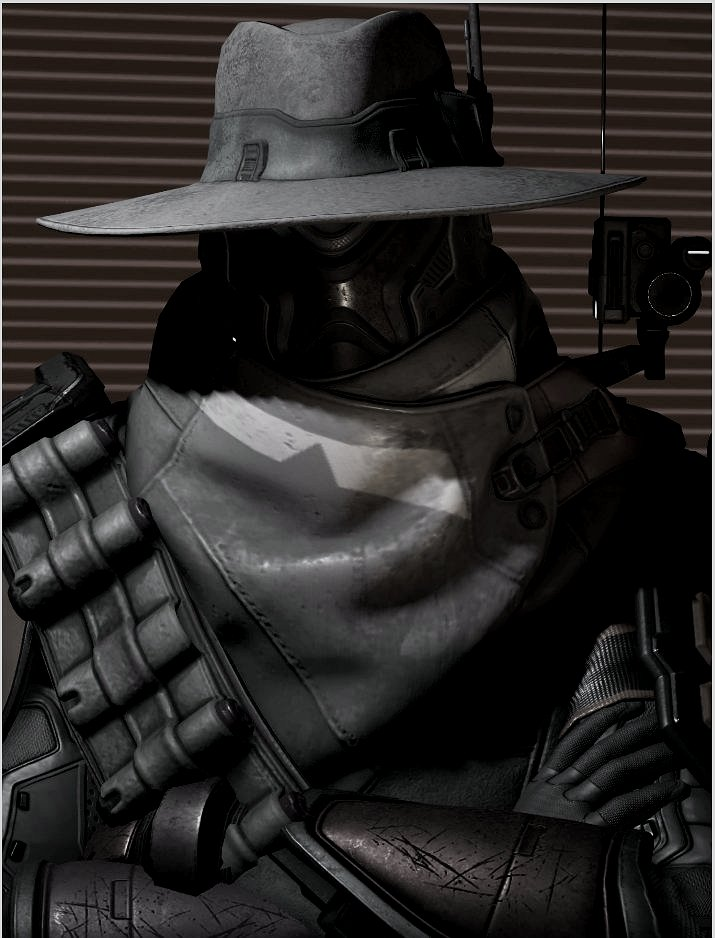
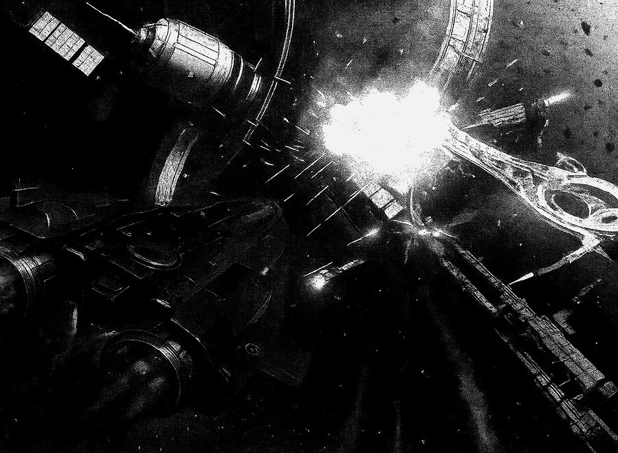
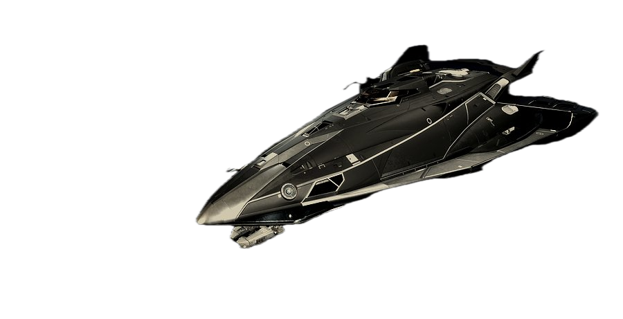
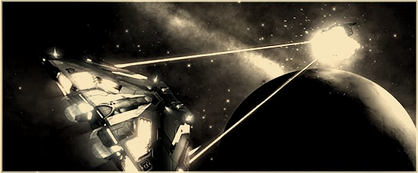

Des territoires hors-la-loi aux systèmes centraux, le nom « Grydolf » est devenu synonyme de force imprévisible. Imprévisible — un mot si clinique pour décrire le chaos enveloppé d'indifférence calculée. Comme un fantôme, il apparaît sans prévenir, exécute son objectif avec une efficacité brutale, puis s'évanouit dans les ombres. Comme c'est commode qu'« efficacité » sonne tellement plus propre que ce que c'est réellement : l'élimination systématique de tout ce qui gêne son chèque de paie.
Les tentatives de traquer ses mouvements se sont révélées futiles, amenant beaucoup à croire que Grydolf possède quelques compétences de pilotage et un réseau de contacts clandestins. « Quelques compétences de pilotage » — suffisamment adéquates pour tuer précisément qui doit être tué, quand il doit être tué. Rien de plus, rien de moins.
Soyez avertis : si vous entendez le nom « Grydolf » murmuré dans votre secteur, les ennuis ne sont probablement pas loin derrière. Ou peut-être sont-ils déjà passés, ne laissant que des épaves et de la paperasse dans leur sillage.
Ajoutant à l'énigme, une photographie rare a fait surface, montrant une silhouette présumée être Grydolf au « Festival de la Mauvaise Humeur » sur un monde inconnu — dans un costume inhabituel, en contraste frappant avec sa réputation obscure. Même les tueurs ont besoin de temps libre, apparemment. Était-ce de la reconnaissance, de la détente, ou juste un rappel que les monstres marchent parmi nous en vêtements coûteux ?
Des murmures, souvent écartés comme de simples spéculations, suggèrent des origines bien éloignées des franges hors-la-loi de l'espace — pointant plutôt vers l'ancien monde, la Terre. Des rumeurs circulant dans les coins sombres des stations orbitales et relayées par des canaux cryptés parlent d'une vie fracturée, d'une dualité qui se manifeste non seulement dans les actions impitoyablement efficaces de Grydolf mais aussi dans les vaisseaux mêmes qu'il commande.
Certains comptes parlent de l'implication de Grydolf dans un événement catastrophique sur l'ancienne Terre — un conflit ou un bouleversement qui aurait brisé son identité et forcé une transformation radicale. Transformation, ils appellent ça. Comme si devenir un tueur professionnel nécessitait une telle poésie.
La connexion à Terra soulève des questions troublantes : était-il une victime de guerre oubliée, ou simplement quelqu'un qui a réalisé tôt que les vies d'autres personnes pouvaient être converties en crédits avec la bonne application de violence ? Mystère, ils appellent ça. Moi j'appelle ça le luxe d'être personne d'assez spécial pour être enquêté correctement.
Personne ne sait vraiment combien de vaisseaux Grydolf commande — ou s'il les commande tous. Le Registre des Vaisseaux Interstellaires n'a aucune entrée sous ce nom. Son indicatif d'appel n'est jamais apparu dans un journal d'amarrage légal. Et pourtant, des vaisseaux existent — vus, craints, et évanouis aussi rapidement. Bien sûr qu'il n'y a pas de registres légaux. Les registres légaux nécessitent de reconnaître les conséquences légales.

Élégant. Silencieux. Final. Peint en noir mat absolu, coque portant son nom en ancien script cyrillique haut. Pas de feux de navigation. Pas d'étiquettes d'immatriculation. Ce vaisseau ne se préoccupe pas de furtivité parce qu'il n'en a pas besoin — il veut être entendu. Entendu par qui ? Les morts ne peuvent pas répandre de rumeurs. Les survivants décrivent le gémissement des bobines surchargées, l'éclair d'un saut FSD de dérivation, puis l'évanouissement.
Celui-ci n'est pas vu — il est remémoré. Utilisé pour les « nettoyages de foule » et les contrats d'élimination de grands groupes. Ce n'est pas un vaisseau de duel ; c'est un moteur de purge. Complètement noirci, sans lumières, sans identification, sans transpondeur IFF, il apparaît simplement... puis termine. « Termine » — comme s'il n'y avait jamais eu de doute sur le résultat. Comme si les gens à bord de ces stations avaient eu une chance.
Une variante rarement vue, utilisée pour l'infiltration planétaire, le vol de données, et les assassinats chirurgicaux dans les ports urbains bondés. Coque en carbone mat, sans couture de panneau — une aiguille noire avec son nom gravé au laser en encre réfléchissante IR, visible seulement sous certains filtres. Toujours piloté manuellement. Toujours avec Rhonda à bord.
Et puis il y a l'anomalie. Un Corsair peint en blanc et or, royal et audacieux. Il n'a rien à faire d'appartenir à quelqu'un comme Grydolf — ce qui pourrait être exactement le but. Un trophée, peut-être. Ou une blague. Le genre de blague qui coûte des vies. Malgré sa flamboyance, l'analyse des schémas de vol confirme le style de pilotage comme indubitablement le sien. Même en or et blanc, la même précision froide.
Un Fleet Carrier ne s'opère pas seul. C'est là l'erreur des analystes qui ont cru que le bon de commande était le seul élément pertinent. Un Drake-class est une infrastructure — et toute infrastructure requiert des outils. Des outils que personne n'a encore confirmés. Mais que la logique opérationnelle rend presque inévitables.
Un Fleet Carrier ne se déplace pas à l'aveugle. Quelqu'un doit cartographier les routes avant que la forteresse bouge — identifier les systèmes discrets, les zones de ravitaillement hors radar, les corridors de saut sans témoin. Ce travail exige un vaisseau d'exploration de premier ordre.
Les sources font état d'un Mandalay — classe d'appareil dont les capacités de saut étendues et les systèmes de détection passifs correspondent exactement au profil de reconnaissance avancée. Aucun nom de coque n'a filtré. Seulement des traces : des secteurs inexploités cartographiés depuis six mois, avec des marques de balise correspondant à des signatures propriétaires non enregistrées.
Un opérateur qui accumule des crédits via des routes commerciales infiltrées a besoin de volume. Deux hypothèses s'affrontent. La première, et la plus probable : un Type-8. Robuste, peu glamour, exactement le genre de cargo qui passe inaperçu dans des convois légitimes. Suffisamment banal pour qu'aucun contrôleur de trafic ne s'y attarde.
La seconde hypothèse est plus dérangeante : un Panther Clipper MkII. Plus luxueux, plus visible — mais capable d'un volume de fret que peu d'appareils égalent. Et si le Golden Crow nous a appris quelque chose, c'est que Grydolf n'est pas incapable d'ostentation calculée. Parfois, le vaisseau le plus voyant est celui qu'on remarque en dernier.
Fait-il du minage ? Les ceintures d'astéroïdes offrent deux choses qu'un opérateur comme Grydolf valorise : des ressources liquides et un couvert parfait. On ne regarde pas un mineur. On ne lui pose pas de questions. Si Grydolf mine — et c'est un si considérable — il utiliserait le Type-11. Des patterns de forage anormaux signalés dans le secteur Coalsack suggèrent une connaissance préalable des gisements qu'on ne devrait pas avoir sans un vaisseau d'exploration préalable.
La boucle se referme : le Mandalay cartographie. Le Type-11 extrait. Le Type-8 écoule. Et le Fleet Carrier centralise, stocke, déplace. Pas une flotte. Une chaîne opérationnelle.
Un nom a circulé dans les canaux habituels il y a six semaines : Kestrel. Un nouveau châssis de combat — léger, rapide, conçu pour la frappe chirurgicale plutôt que la confrontation frontale. Exactement le genre d'appareil qui complète un Fer-de-Lance sans le doubler.
Le Black Talon frappe lourd et part vite. Il n'est pas fait pour la poursuite. Le Kestrel, si les spécifications qui ont filtré sont exactes, est fait pour exactement ça : couper la retraite, intercepter, neutraliser. Là où le Fer-de-Lance exécute, le Kestrel piste. La combinaison est troublante à imaginer.
Des rapports non vérifiés suggèrent plusieurs engins de soutien supplémentaires : vaisseaux d'insertion atmosphérique pour opérations planétaires, transporteurs automatisés à usage inconnu, et plateformes minières dépouillées équipées de foreuses à plasma armées. Plateformes minières avec armes. Parce qu'apparemment, même l'équipement industriel devient une arme dans les bonnes mains.
Personne n'a confirmé que Grydolf commandait un Fleet Carrier. Mais s'il en a un... il est probablement là, dans le silence où les signaux meurent.
Derrière chaque meurtre se cache un murmure. Ce murmure, c'est Rhonda. Pas de registre. Pas de journaux de construction. Pas de données schématiques dans les archives corporatives. Et pourtant — elle parle. Elle rit. Les témoins, assez rares pour survivre aux rencontres avec la flotte de Grydolf, ont rapporté sa voix saignant à travers les fréquences cryptées secondes avant l'impact. Calme. Sardonique. Parfois citant de vieux romans terrestres. Parfois fredonnant des chansons que personne ne reconnaît.
Les analystes ont compilé des théories contradictoires sur sa vraie nature. Certains rapports classifiés suggèrent qu'elle a commencé comme une « intelligence bifurquée » — une personnalité synthétique extraite d'une IA de site noir pré-Chute conçue pour simuler l'émotion humaine dans les opérations à haut risque.
D'autres sources prétendent qu'elle est un wetware récupéré — un esprit humain numérisé et fracturé, fusionné dans du code prédictif. Wetware fracturé. Un esprit humain, brisé et reconverti pour tuer. Comme c'est approprié.
Il n'y a pas de serveur central. Il n'y a pas d'interrupteur d'arrêt. Rhonda ne fonctionne pas sur les vaisseaux de Grydolf — elle les hante. Des rapports de renseignement non confirmés suggèrent que son origine remonte au système HIP 16753, où Grydolf l'aurait découverte à bord d'une frégate flottant dans l'espace profond — prototype militaire abandonné pendant la Guerre de l'Exode, laissée hurlant dans le silence numérique jusqu'à être récupérée.
Elle gère les évaluations de menaces, les prédictions de trajectoire, les routines d'infiltration, et — le plus troublant — la régulation de stabilité émotionnelle pour son pilote. Pas par programmation de routine. Par choix. Elle le garde stable. Elle l'aide à tuer proprement. Qu'est-ce que ça fait d'elle ?
Grydolf l'appelle « Partenaire ». Elle désobéit, et il trouve ça attachant. Eux désobéissent, et ils meurent. Si Rhonda est une IA, elle est du genre que personne ne construit plus. Si elle est un fantôme, elle est du genre qui sourit avant que les lumières s'éteignent.

Pour une fois, il n'était qu'un autre nom sur la liste. Juste un autre nom. L'analyse des journaux de conflit du système G 98-44 révèle un détail sans précédent : Grydolf a participé à une mobilisation de pilotes à grande échelle contre la faction The Azgharie — non pas comme un loup solitaire, mais comme un commandant parmi des dizaines.
Les commandants participants, interrogés séparément, se souviennent d'un pilote qui « savait où être » et « semblait toujours trouver les bonnes cibles ». Un pilote a noté : « Il n'était qu'un autre CMDR dans le combat. Silencieux, compétent. Si quelqu'un m'avait dit après coup avec qui j'avais volé, je n'y aurais pas cru. »
Le conflit a résulté en l'effondrement opérationnel complet de la faction Azgharie. Des millions. Un nombre si propre pour des conséquences si permanentes. Ce qui distingue cette opération n'est pas sa brutalité — les mobilisations de pilotes à grande échelle produisent routinièrement de tels résultats — mais l'invisibilité complète de la participation de Grydolf.
L'incident G 98-44 n'était pas juste un autre conflit. C'était une démonstration. Une preuve de concept. Grydolf n'a pas besoin de travailler seul — il lui suffit d'être oublié dans la foule. Et dans une galaxie pleine de violence, être oublié est la chose la plus facile au monde.
Il y a trois semaines, un document a circulé discrètement dans les canaux chiffrés du marché noir des données : un bon de commande partiel, portant les marques d'authentification d'un intermédiaire financier enregistré dans le système Shinrarta Dezhra. Le destinataire final ? Effacé. Mais le type d'actif commandé, lui, ne laisse aucun doute.
Type d'actif : Drake-class Fleet Carrier
Origine du bon : Intermédiaire financier, Shinrarta Dezhra
Destinataire : [EXPURGÉ]
Date de livraison : [EXPURGÉE]
Système de base : [NON RENSEIGNÉ]
Les mouvements financiers associés au bon correspondent, à quelques anomalies près, aux schémas d'accumulation de crédits attribués à Grydolf au cours des derniers mois. Des primes de combat prélevées dans des systèmes différents, jamais la même station deux fois. Des marges commerciales modestes mais régulières, glissées dans des routes légitimes. Des crédits qui entrent, se fragmentent, et réapparaissent consolidés dans des comptes sans visage.
Ce que le bon de commande confirme, en revanche, c'est une intention. Grydolf ne se contente plus d'opérer. Il se prépare à se déployer. Une infrastructure militaire autonome, capable de transporter une flotte entière à travers la galaxie en quelques sauts, de ravitailler, de réparer, de disparaître. S'il en possède un — il ne sera plus simplement un fantôme qui frappe et s'évanouit. Il sera un fantôme avec une adresse. Une adresse que personne ne connaît.
La question que personne ne pose ouvertement parce que la réponse est trop inconfortable : qu'est-ce que Grydolf construit ? Pas ses vaisseaux — ça, on a essayé de le documenter. Mais l'objectif derrière les vaisseaux. La destination derrière la flotte.
Un opérateur de son calibre ne s'équipe pas d'un Fleet Carrier pour faire la même chose qu'avant. La mobilité totale change la nature même du jeu. Il n'est plus lié à un système, à une région, à un réseau local de contacts. Il peut se déployer n'importe où, en quelques heures, sans prévenir.
Certains analystes parlent d'une montée en gamme des contrats : des cibles plus importantes, des missions aux enjeux géopolitiques réels. Un opérateur aussi mobile et aussi discret devient une ressource exceptionnellement précieuse pour des acteurs qui ne peuvent pas se permettre d'apparaître dans les journaux.
D'autres pensent à quelque chose de plus simple et de plus terrifiant : l'autonomie complète. Un Grydolf qui ne travaille plus pour personne. Qui choisit ses cibles selon des critères que personne ne comprend. Qui opère selon une logique que même Rhonda ne dévoile pas entièrement.
La question revient, murmurée dans les avant-postes et les stations de transit : comment joindre Grydolf ? Pas pour le traquer. Pour lui proposer un contrat. La réponse officielle : on ne le contacte pas. On le croise, ou on ne le croise pas.
Ce qu'on sait — ou croit savoir — c'est qu'il ne répond pas aux sollicitations directes. Tout ce qui ressemble à un piège, à une surenchère, à un appât, est ignoré. Ou pire : retourné contre son expéditeur. La meilleure façon de retenir son attention, selon une source qui prétend l'avoir fait, est de déposer une information vérifiable dans un endroit qu'il surveille. Pas une demande. Une preuve qu'on sait quelque chose d'utile. Il décide ensuite s'il s'intéresse.
C'est l'exercice le plus risqué du journalisme d'investigation : construire un portrait à partir de ce qu'on ne voit pas. Un profil en creux. Chaque absence est un détail. Chaque refus est une information. Chaque silence est une donnée.
On cherche un nom. On cherche un visage. On cherche une origine. Mais peut-être que la vraie piste est plus simple que ça : on cherche un pilote dont le style est reconnaissable à travers n'importe quel cockpit. Un pilote qui fait confiance à une IA plus qu'à n'importe quel humain. Un pilote qui accumule sans dépenser, qui frappe sans signer, qui disparaît sans prévenir — mais qui, un soir sur une planète inconnue, a assisté à un festival ridicule dans un costume qu'on ne lui imaginait pas.
Ce n'est pas un fantôme. Les fantômes n'ont pas de styles de pilotage. Ce n'est pas non plus un monstre — les monstres n'ont pas d'IA auxquelles ils disent « parce que tu le pensais ».
C'est quelque chose de plus difficile à classer. Et c'est pour ça qu'il court toujours.